Harmonic Motion
Any motion that repeats itself at regular intervals is called periodic motion or harmonic motion; e.g. the motion of a mass on a spring that is displaced from equilibrium and released. This behavior is ubiquitous in physics, arising in all sorts of mechanical and electromagnetic contexts, in all wave phenomena, and in phenomena ranging down to the atomic scale, such as the vibration of nuclei in a molecule. To derive the equation for simple harmonic motion, consider the motion of a block of mass m attached to one end of a spring, the other end of which is fixed. In these conditions the resultant of the vertical forces is zero, the weight being equilibrated by the normal force of the constraint and the block rests on the horizontal frictionless surface.
We assume we are in the range of validity of the Hook law. The force acting on the block is then Fx = −kx. We will take the zero of the coordinate system to lie at the equilibrium position. The equation of motion is
m d2x/dt2 = −kx
Introducing the positive quantity ω = (k/m)1/2 puts the equation for SHM in the standard form
This equation is a homogeneous second-order differential equation, often referred to as a harmonic equation.
Any system that obeys an equation of this form is called a harmonic oscillator. Before looking at the solution of the harmonic oscillator equation, it is useful to see what the equation tells us physically. The displacement and the acceleration always have opposite signs. As the mass heads outward x > 0, the negative acceleration eventually brings the mass to rest and accelerates it back toward the equilibrium position. After the mass speeds through equilibrium, the acceleration changes sign and the mass is pulled back. We therefore expect the mass to oscillate about the equilibrium position.
Motion that repeats regularly is called periodic motion, and we might guess that simple harmonic motion is periodic. Sine and cosine functions are periodic, repeating themselves whenever their arguments increase by 2π radians (360°). We can find easily a particular solution as
x1 = a cos(ωt)
Another solution is as well
x2 = b cos(ωt)
where the constants a and b must be determined from the initial conditions of the motion. We known that a linear combination of the two particular solution is again a solution namely
x = x1 + x2 = a cos(ωt) + b cos(ωt)
This is the general solution of the DE. They are two in number because the differential equation is of the second order. The general solution can also be expressed in the, often more convenient, form;
x(t) = A cos (ω t + φ)
This is done by using the compound angle formula
A cos (ω t + φ) = a cos φ cos ωt − b sin φ sin ωt
hence
a = cos φ, b = − A sin φ
where
A = √a2 + b2, φ = − arctan(b/a)
In Eq. (23.2.25) the quantity ωt + φ called the phase, and φ is called the phase constant. Because cos(ωt + φ) varies between +1 and −1, and A > 0, and so the motion of the simple harmonic oscillator is bounded, its displacement lying between ±A. A is called the amplitude and represents the maximum displacement of the oscillator from its equilibrium position. The quantity ω, which has the physical dimensions of the inverse of time, is called angular frequency and also pulsation.
Now we deal with the determination of the constants. Normally we are told two facts about the state of the body at time t = 0, namely the body's initial position and initial velocity, which together fix A and φ.
Let us apply these ideas with a simple example.
Example. A 2 kg mass is attached to horizontal spring and displaced 1 mm from equilibrium by a force of 5 N, and then released from rest. What is the subsequent motion?
Solution. If the static extension is x0, then F = −kx0 ⇒ k = 5/0.001 = 5000 N m−1. Also, ω02 = k/m = 5000/2 ⇒ ω = 50 rad s−1. Now applying the initial conditions to the general solution x = A cos(ωt + φ):
x = x0 at t = 0 ⇒ x0 = A cos φ
ẋ = 0 at t = 0 ⇒ 0 = −ωA sin φ
To give physical significance to these constants, it is convenient to form a graphical representation of themotion by plotting x as a function of t as in the following figure.
The following three concepts are important in discussing any kind of periodic motion:
The amplitude A is the maximum distance of the object from its equilibrium position. In the absence of friction, an object in simple harmonic motion oscillates between the positions x = −A and x = +A.
The period T is the time it takes the object to move through one complete cycle of motion, (from x = A to x = −A and back to x = A).
T = 2πω
The frequency ν is the number of complete cycles or vibrations per unit of time, and is the reciprocal of the period
ν = 1/T =
ω/2π.
Energy in Simple Harmonic Motion
We now examine SHM further using energy concepts. Since the restoring force is conservative, we can define a potential energy, and further, that the total mechanical energy, kinetic plus potential, is a conserved quantity. We have proved these ideas in general previously. Let us see how it all checks out for SHM.
The conservative restoring force in SHM is F = −kx, which can be derived from a potential function according to F = −dU/dx. Hence
Note that this equation defines a differente in potential energy, but says nothing about the absolute value of the potential energy, because the concept of absolute value here does not have physical significance. The zero of potential energy is taken by convention at x = 0, i.e. when the spring is in its natural lenght.
The total mechanical energy is therefore
E = K + U = ½ mv2 + ½ kx2
The time-independence of E can be checked by substituting the general solution x(t) = A cos(ωt + φ):
But ω2 = k/m, so
E = ½ kA2 = ½ mωA2
which is constant as claimed. The kinetic energy and the potential energy are time-dependent as shown in Figure 3.3 (for φ = 0), but their sum representing the total energy is constant. The potential energy and the kinetic energy are exchanged four times every oscillation period, whilst the total mechanical energy (= mω2A2/2) corresponds to the potential energy at maximum displacement x = A, or the kinetic energy at the equilibrium position x = 0. The model developed in this section predicts that the oscillations will continue forever, and whilst an oscillator may go through many cycles without significant energy loss, eventually friction will cause the amplitude to decay and for the oscillations to die out. We consider this more realistic model next.